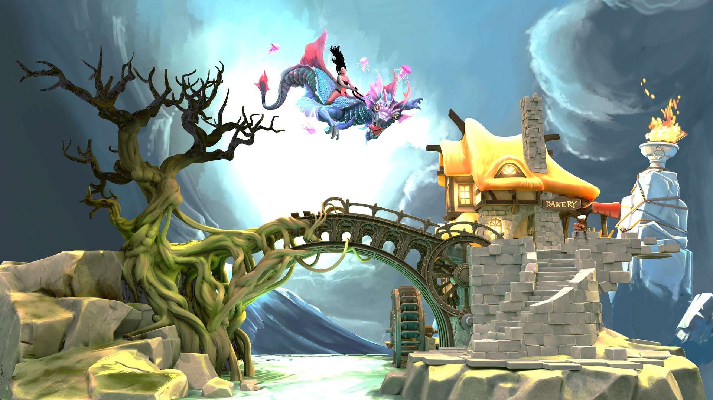
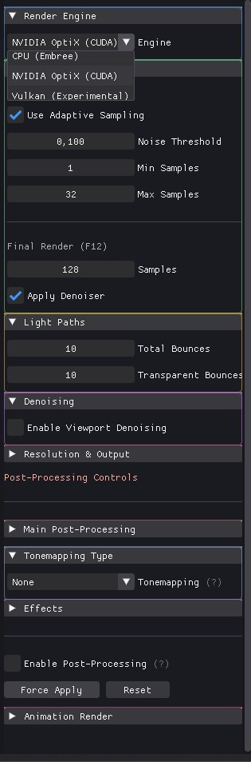
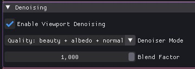
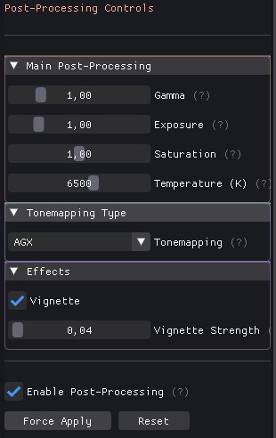

Render Settings

1. Sampling

docs/images/render_main.jpg
Configure the path tracing quality and ray depth.
| Parameter | Description |
|---|---|
| Samples | Total rays per pixel. 1000+ for final. |
| Bounces | Max light bounces (Depth). 4 to 12. |
| Russian Roulette | Min depth before random termination (optimization). |
| Clamp | Limits max brightness to reduce fireflies. |
2. Denoiser (OIDN)

docs/images/render_denoise.jpg
Intel Open Image Denoise integration.
| Setting | Description |
|---|---|
| Enable | Activates AI Denoising post-process. |
| Prefilter | Uses Albedo/Normal passes to preserve texture detail. |
| Quality | High (Slower) vs Fast. |
3. Post-Process

docs/images/post_prosses.jpg
Controls for final image adjustments applied after rendering. The Effects area includes a Vignette control for framing.
| Parameter | Typical Use |
|---|---|
| Gamma | Adjust the final image gamma curve. |
| Exposure | Adjust overall scene brightness. |
| Saturation | Increase or decrease color intensity. |
| Temperature (K) | Shift white balance using Kelvin temperature. |
| Effects | Vignette available in the Effects area for subtle framing. |
4. Hardware & Backends
OptiX (GPU), Vulkan (GPU) vs Embree (CPU)
OptiX: Uses NVIDIA RT Cores for max speed on RTX cards when running the OptiX backend.
Vulkan: Cross-vendor GPU backend. Select Vulkan in Render → Backend to use the Vulkan renderer. Vulkan offers a portable GPU path (including VK_KHR_ray_tracing on supported drivers) and can run on compatible GPUs (NVIDIA, AMD, Intel). Ensure your Vulkan drivers/runtimes are up to date; if ray-tracing extensions are unavailable the renderer will fall back to a compute-based mode.
Embree: CPU fallback for compatibility, debugging, or systems without supported GPU drivers.
Notes: Switching the render backend applies immediately; a restart is not required. For best Vulkan performance, keep drivers up to date and enable any platform performance modes if available.